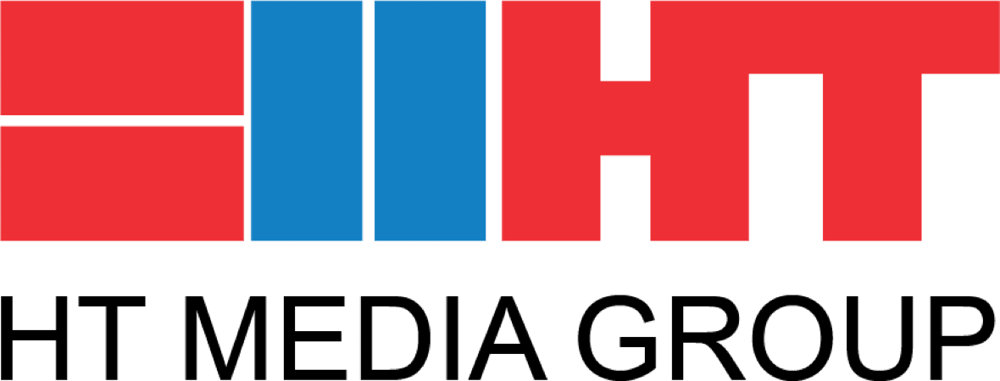

LinkedIn · Media
Content-led acquisition and retargeting for a complex advertising product
50%+pipeline growth
70%lower CPL
63%higher engagement
Research content, webinars and document ads built warm audiences before testimonial and case-study retargeting.
Open HT Media case study ↗